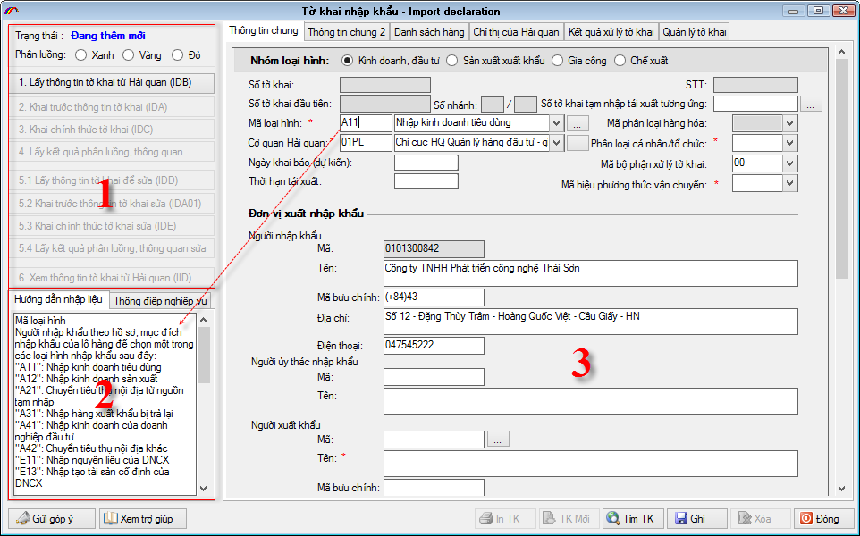
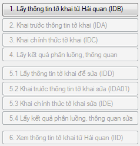

GIỚI THIỆU TỔNG QUAN TỜ KHAI
Tờ khai VNACCS:
Hình ảnh tờ khai VNACCS được thiết kế như sau:
Phần 1: Là danh sách các nút nghiệp vụ (Các nút này sẽ mờ đi hoặc sáng lên theo từng trạng thái của tờ khai)
Phần 2: Hướng dẫn nhập liệu cho từng chỉ tiêu trên tờ khai và thông điệp thông báo trả về từ hệ thống của Hải quan
Phần 3: Thông tin tờ khai bao gồm Thông tin chung, danh sách hàng, chỉ thị của Hải quan và kết quả xử lý tờ khai.

Tờ khai VNACCS có đặc điểm là:
Việc khai tờ khai sẽ thực hiện theo các bước nghiệp vụ, mỗi nghiệp vụ sẽ có một mã tương ứng như:
1.Lấy thông tin tờ khai từ Hải quan (IDB)
2.Khai trước thông tin tờ khai (IDA)
3.Khai chính thức tờ khai (IDC)
4.Lấy kết quả phân luồng, thông quan
Các nút nghiệp vụ từ 5.1 đến 5.4 sử dụng để sửa tờ khai.
6.Xem thông tin tờ khai từ Hải quan (IID) sử dụng để xem tờ khai đã khai báo từ hệ thống của Hải quan
Để giải thích rõ quy trình khai theo các nghiệp vụ này chúng tôi sẽ hướng dẫn ở mục tiếp theo dưới đây.
Danh sách hàng của tờ khai chỉ khai được tối đa 50 dòng hàng, khi có lớn hơn 50 dòng hàng thì sẽ phải tách ra thành nhiều tờ khai nhánh (việc tách này sẽ do chương trình thực hiện tự động, người khai chỉ cần nhập tất cả các dòng hàng trên tờ khai đầu tiên, khi khai chương trình sẽ tách thành các tờ khai nhánh phù hợp).
Các danh mục như: Loại hình xuất nhập khẩu, Đơn vị Hải quan, Danh mục cảng cửa khẩu, đợn vị tính,… được chuẩn hoá lại theo chuẩn mực VNACCS.
Các chỉ tiêu thông tin bắt buộc phải nhập trên tờ khai rất ít, các chỉ tiêu thông tin không nhập sẽ được hệ thống của Hải quan trả về, ví dụ như chúng ta chỉ cần nhập mã đơn vị xuất nhập khẩu thì hệ thống của Hải quan sẽ trả về các thông tin còn thiếu như Tên đơn vị, địa chỉ,….Hay trên dòng hàng thì không cần nhập trị giá tính thuế và thuế suất, tiền thuế mà khi khai hệ thống của Hải quan sẽ tự trả về Trị giá tính thuế, thuế suất và tiền thuế tương ứng với mỗi sắc thuế vì vậy chúng ta sẽ hiểu tại sao lại có bước "2.Khai trước thông tin tờ khai (IDA)" (Có thể hiểu là khai trước thông tin tờ khai để hệ thống của Hải quan trả về các thông tin còn thiếu và kết quả tính thuế của tờ khai, nếu người khai thấy phù hợp thì mới tiền hành khai chính thức bằng nghiệp vụ "3.Khai chính thức tờ khai (IDC)", khi khai chính thức hệ thống của Hải quan mới đưa tờ khai vào xử lý thông quan)
Quy trình khai báo trên tờ khai VNACCS:
Dựa trên đặc điểm của tờ khai VNACCS là thực hiện khai báo theo các bước nghiệp vụ, các bước nghiệp vụ này đã được tính hợp sẵn trên các nút nghiệp vụ theo thứ tự các bước thực hiện như sau:

Nút nghiệp vụ số 1 "1.Lấy thông tin tờ khai từ Hải quan (IDB)": Khi tạo tờ khai mới bạn sẽ thấy chỉ có nút này sáng lên nên có thể hiểu rằng sẽ thực hiện nghiệp vụ này đầu tiên nhưng thực tế thì nghiệp vụ này chỉ dùng để gọi lại thông tin tờ khai đã khai trước đó lên hệ thống của Hải quan hoặc gọi một số tiêu chí của tờ khai thông qua các chứng từ đã khai trước đó như là "Hoá đơn ", hay "eManifest". Cách thông thường là người khai sẽ tự nhập thông tin trên tờ khai mới. Sau khi nhập thông tin tờ khai bạn ghi lại thì nút nghiệp vụ số 2 "2.Khai trước thông tin tờ khai (IDA) " sẽ sáng lên như vậy có thể hiểu là người khai sẽ thực hiện bước nghiệp vụ này tiếp theo.
Nút nghiệp vụ số 2 "2.Khai trước thông tin tờ khai (IDA) ": Khi hoàn thành nhập liệu cho tờ khai và ghi lại thì người khai sẽ thực hiện nghiệp vụ thứ 2 này và hệ thống của Hải quan sẽ trả về số tờ khai, các thông tin còn thiếu và quan trọng nhất là thông tin về thuế của tờ khai do hệ thông của Hải quan tính và trả về cho doanh nghiệp. Người khai sẽ kiểm tra thông tin tờ khai trả về đã phù hợp chưa và quyết định một trong hai tình huống sau:
Nếu đồng ý với thông tin tờ khai và tính thuế trả về từ Hệ thống của Hải quan thì tiến hành bước nghiệp vụ tiếp theo là "3.Khai chính thức tờ khai (IDC)" khi thực hiện bước này thì tờ khai sẽ được khai chính thức và được Hệ thống của Hải quan đưa vào xử lý thông quan và các nghiệp vụ tiếp theo.
Nếu thấy nội dụng tờ khai trả về và kết quả tính thuế chưa phù hợp thì người khai có thể tiếp tục sửa tờ khai và thực hiện lại bước khai trước thông tin tờ khai lên hệ thông của Hải quan để nhận kết quả mới trả về (Bước này có thể thực hiện lặp lại nhiều lần mà không giới hạn).Để sửa lại thông tin thì người khai sẽ quay lại bước 1 "1.Lấy thông tin tờ khai từ Hải quan (IDB)" khi đó hệ thống sẽ tài về nội dung tờ khai đã khai để người khai có thể sửa lại thông tin. Sau khi sửa và ghi lại thì lại tiếp tục thực hiện bước 2 "2.Khai trước thông tin tờ khai (IDA) " và nhận kết quả thông tin tờ khai trả về từ Hải quan.
Nút nghiệp vụ 3 "3.Khai chính thức tờ khai (IDC)": Sử dụng khi người khai chính thực đồng ý với nối dung tờ khai do hệ thống Hải quan trả về khi khai trước thông tin tờ khai trong bước 2.
Nút nghiệp vụ 4 "4.Lấy kết quả phân luồng, thông quan": Chức năng này dùng để lấy các thông tin thông quan của tờ khai khi tờ khai đã được khai chính thức bằng nghiệp vụ IDC.
Sau khi nhận được các kết quả thông quan tờ khai bạn vào mục "Kết quả xử lý tờ khai" để in tờ khai và các thông báo của tờ khai để tiến hành các bước tiếp theo.
Các nút nghiệp vụ từ mục 5.1 đến 5.4 sử dụng để sửa tờ khai khi đã khai chính thức và các bước thực hiện và ý nghĩa giống như quy trình khai mới tờ khai nêu trên chỉ khác là thực hiện khi muốn sửa tờ khai đã khai chính thức.
Nút nghiệp vụ 6 "6. Xem thông tin tờ khai từ Hải quan": Sử dụng để xem tờ khai lưu trên hệ thông của Hải quan mà người khai đã khai trước đó.
Bản quyền © thuộc về Công ty TNHH Phát triển công nghệ Thái Sơn